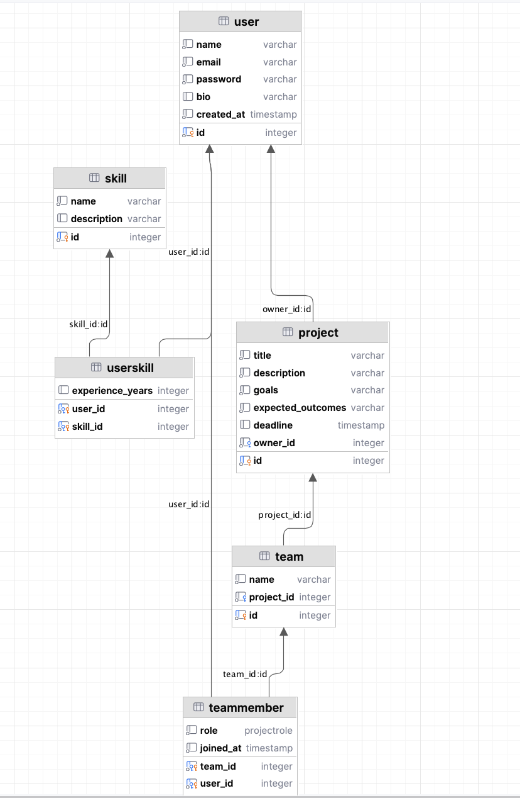
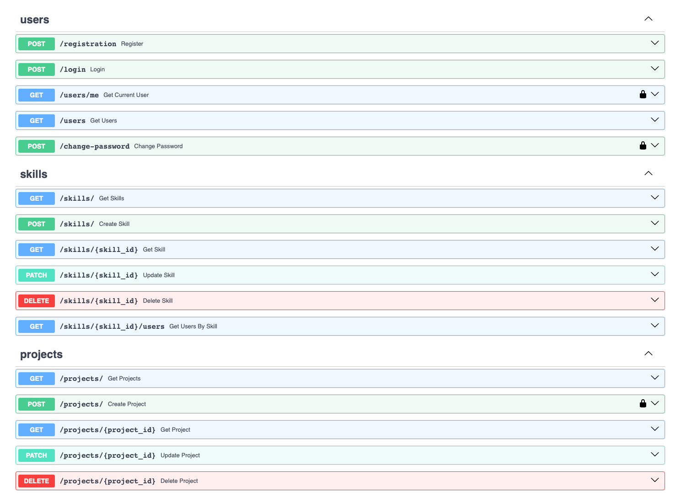
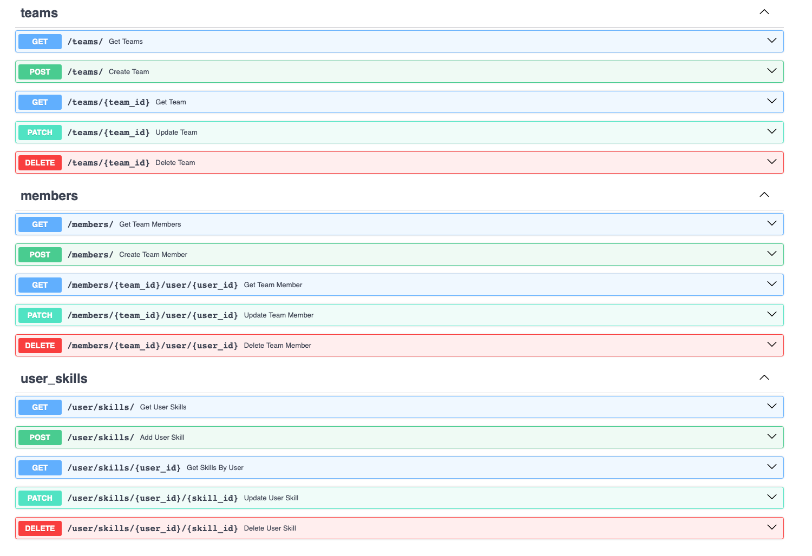

Лабораторная работа 1. Реализация серверного приложения FastAPI
Тема:
Создание системы для поиска людей в команду
Ход работы:
Схема базы данных:

Файл models.py
from datetime import datetime
from typing import Optional, List
from enum import Enum
from sqlmodel import SQLModel, Field, Relationship
class ProjectRole(str, Enum):
developer = "developer"
designer = "designer"
analyst = "analyst"
manager = "manager"
class User(SQLModel, table=True):
id: int = Field(default=None, primary_key=True)
name: str
email: str
password: str
bio: Optional[str]
created_at: datetime = datetime.now()
skills: List["UserSkill"] = Relationship(back_populates="user")
memberships: List["TeamMember"] = Relationship(back_populates="user")
owned_projects: List["Project"] = Relationship(back_populates="owner")
class Skill(SQLModel, table=True):
id: int = Field(default=None, primary_key=True)
name: str
description: Optional[str] = None
user_skills: List["UserSkill"] = Relationship(back_populates="skill")
class UserSkill(SQLModel, table=True):
user_id: int = Field(foreign_key="user.id", primary_key=True)
skill_id: int = Field(foreign_key="skill.id", primary_key=True)
experience_years: Optional[int] = 0
user: Optional[User] = Relationship(back_populates="skills")
skill: Optional[Skill] = Relationship(back_populates="user_skills")
class Project(SQLModel, table=True):
id: int = Field(default=None, primary_key=True)
title: str
description: str
goals: str
expected_outcomes: str
deadline: Optional[datetime] = None
owner_id: int = Field(foreign_key="user.id")
owner: Optional[User] = Relationship(back_populates="owned_projects")
teams: List["Team"] = Relationship(back_populates="project")
class Team(SQLModel, table=True):
id: int = Field(default=None, primary_key=True)
name: str
project_id: int = Field(foreign_key="project.id")
project: Optional[Project] = Relationship(back_populates="teams")
members: List["TeamMember"] = Relationship(back_populates="team")
class TeamMember(SQLModel, table=True):
team_id: int = Field(foreign_key="team.id", primary_key=True)
user_id: int = Field(foreign_key="user.id", primary_key=True)
role: ProjectRole
joined_at: datetime = datetime.now()
team: Optional[Team] = Relationship(back_populates="members")
user: Optional[User] = Relationship(back_populates="memberships")
Файл connection.py
import os
from dotenv import load_dotenv
from sqlmodel import SQLModel, Session, create_engine
load_dotenv()
db_url = os.getenv('DB_URL')
engine = create_engine(db_url, echo=True)
def init_db():
SQLModel.metadata.create_all(engine)
def get_session():
with Session(engine) as session:
yield session
Файл project_endpoints.py
from fastapi import APIRouter, Depends, HTTPException
from sqlmodel import Session, select
from typing_extensions import List
from auth.auth import AuthHandler
from db.connection import get_session
from model.models.models import Project, User
from model.schemas.project import ProjectCreate, ProjectRead, ProjectUpdate
project_router = APIRouter()
auth_handler = AuthHandler()
@project_router.post("/", response_model=ProjectRead)
def create_project(project: ProjectCreate, session: Session = Depends(get_session), current_user: User = Depends(auth_handler.get_current_user)):
db_project = Project(**project.model_dump(), owner_id=current_user.id)
session.add(db_project)
session.commit()
session.refresh(db_project)
return db_project
@project_router.get("/", response_model=List[ProjectRead])
def get_projects(session: Session = Depends(get_session)):
return session.exec(select(Project)).all()
@project_router.get("/{project_id}", response_model=ProjectRead)
def get_project(project_id: int, session: Session = Depends(get_session)):
project = session.get(Project, project_id)
if not project:
raise HTTPException(status_code=404, detail="Project not found")
return project
@project_router.patch("/{project_id}", response_model=ProjectRead)
def update_project(project_id: int, update: ProjectUpdate, session: Session = Depends(get_session)):
project = session.get(Project, project_id)
if not project:
raise HTTPException(status_code=404, detail="Project not found")
update_data = update.model_dump(exclude_unset=True)
for key, value in update_data.items():
setattr(project, key, value)
session.commit()
session.refresh(project)
return project
@project_router.delete("/{project_id}", response_model=dict)
def delete_project(project_id: int, session: Session = Depends(get_session)):
project = session.get(Project, project_id)
if not project:
raise HTTPException(status_code=404, detail="Project not found")
session.delete(project)
session.commit()
return {"ok": True}
Файл schemas.skill.py
from pydantic import BaseModel, EmailStr
from typing import Optional
class SkillBase(BaseModel):
name: str
description: Optional[str] = None
class SkillCreate(SkillBase):
pass
class SkillRead(SkillBase):
id: int
class Config:
from_attributes = True
class SkillUpdate(SkillBase):
name: Optional[str]
description: Optional[str]
class UserShortInfo(BaseModel):
name: str
email: EmailStr
bio: Optional[str] = None
class UsersSkillReadDetail(BaseModel):
user: Optional["UserShortInfo"]
experience_years: Optional[int]
Эндпоинты в Swagger

